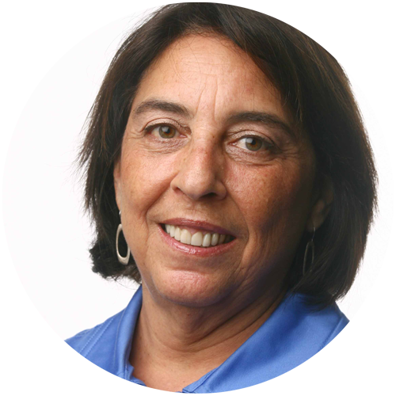

C+J 2016 is in the heart of Silicon Valley
Data and computation drive our world, often without sufficient critical assessment or accountability. Journalism is adapting responsibly—finding and creating new kinds of stories that respond directly to our new societal condition. Join us for a two-day conference exploring the interface between journalism and computing.
#CJ2016

Videos of #CJ2016
Watch snapshots of insights from the symposium in this summary video:
Watch full videos of the symposium sessions:
Coverage of #CJ2016
-Election deception is nothing new, says Stanford Professor Jeff Hancock
-Computational methods promise journalistic advances, says New York Times Data Editor Sarah Cohen
-Seeing is believing: Tamara Munzner’s keynote on visualization and journalism
-News beyond numbers: Seeing stories in an age of data
-Machine learning increases potential techniques for investigative reporting
-Hamilton lyrics teach journalists how to engage their audience
About the Symposium
The Computation+Journalism Symposium is a celebration and synthesis of new ways to find and tell news stories with, by and about data and algorithms. It is a venue to seed new collaborations between journalists and computer and data scientists: a bazaar for the exchange of ideas between industry/practice and academia/research.
Journalists working today routinely encounter social and political systems that are driven by new technologies. To critique their operation, a journalist needs an understanding of computation — of the consequences of classification and counting, of the collection and analysis of data, and of the accountability of algorithms. Far from virtual, inert quantities, data and computation exert real forces in the physical world, shaping and defining systems of power that will play larger and larger roles in people's lives.
Journalists, "the explainers of last resort," need to adapt responsibly — finding and creating new kinds of "stories" that respond directly to new technologies, whether that “story” be a piece written in English or in Python, a data visualization, an API or database, an immersive virtual experience, or a sensor drone deployment.
Computation+Journalism is a forum for discussing the ways journalism is and should be adapting in the face of new technologies. We invite the participation of a broad range of thinkers, doers and storytellers to this interdisciplinary meeting, a hybridization of journalism and the computing and data sciences. We want to hear from journalists with an interest in, or experience in, developing new technologies or applications, and from data and computer scientists working in news, or storytelling broadly, and collaborating or hoping to collaborate with journalistic organizations.
2016 Keynotes
"The Newest Muckrakers: Investigative Reporting in the Age of Data Science"

Sarah Cohen
The New York Times
Sarah Cohen leads a data journalism team at The New York Times focused on long-term investigative reporting. Stories from the team include the Pulitzer Prize finalist for 2016, "Beware the Fine Print," on the rights removed through the proliferation of arbitration clauses for everyday transactions. She served as the Knight Professor of the Practice at Duke University until 2012. There, she founded the Reporters' Lab, which reviewed and developed tools for investigative and public affairs reporting. Her prior experience includes more than a decade as a database editor for the Washington Post, where she shared in national journalism awards including the Pulitzer Prize for Investigative Reporting, the Goldsmith Award and the Robert F. Kennedy prize for public service. She is a member of the board of Investigative Reporters and Editors, where she served as president from 2014 through June 2016, and works as an adjunct professor at the Columbia University Graduate School of Journalism.
“Truth, Trustworthiness and Technology in Political Campaigns”
Jeff Hancock
Stanford University
Jeff Hancock is a professor in the Department of Communication at Stanford University and the director of the Stanford Center for Computational Social Science. Hancock studies the psychology of social media, using computational techniques and behavioral experiments to examine deception and trust, emotional dynamics, intimacy and relationships, and social support. Hancock’s TED Talk on deception has been seen over one million times and he’s been featured as a guest on "CBS This Morning" for his expertise on social media. His research has been frequently featured in the popular press, including the New York Times, CNN, NPR, CBS and the BBC. Hancock worked for Canada Customs before earning his PhD in Psychology. Prior to joining Stanford he was a professor of communication and co-chair of information science at Cornell University. He currently lives in Palo Alto with his wife and daughter, and he regularly gets shot at on the ice as a hockey goalie.
"Visualization and Journalism: Four Vignettes"
Tamara Munzner
University of British Columbia
Tamara Munzner is a professor at the University of British Columbia Department of Computer Science and holds a PhD from Stanford. She has been active in visualization research since 1991 and has published over sixty papers. She co-chaired InfoVis in 2003 and 2004, co-chaired EuroVis in 2009 and 2010, and is a member of the InfoVis Steering Committee and chair of the VIS Executive Committee. Her book, “Visualization Analysis and Design,” appeared in 2014, and she received the IEEE VGTC Visualization Technical Achievement Award in 2015. Her research interests include the development, evaluation and characterization of information visualization systems and techniques. She has worked on problem-driven visualization in a broad range of application domains, including genomics, evolutionary biology, geometric topology, computational linguistics, large-scale system administration, web log analysis and journalism. Her technique-driven interests include graph drawing and dimensionality reduction. Her evaluation interests include both controlled experiments in a laboratory setting and qualitative studies in the field.
Schedule
Friday, Sept. 30, 2016: 9 a.m. to 7 p.m.
Saturday, Oct. 1, 2016: 9 a.m. to 4 p.m.
DAY ONE, Friday:
8:30 a.m.
Coffee, tea and light pastries available.
8:55 a.m.
Welcome to C+J 2016
Maneesh Agrawala, Stanford University
Jay Hamilton, Stanford University
9:00 - 10:15 a.m.
Keynote: “Truth, Trustworthiness and Technology in Political Campaigns”
Jeff Hancock, Stanford University
10:15 - 10:30 a.m.
Break
10:30 - 11:30 a.m.
Paper Session: “Campaign 2016: Fact Checking and Polling”
Moderated by Amanda Hickman, BuzzFeed Open Lab
- Comparing Automated Factual Claim Detection Against Judgements of Journalism Organizations – Chengkai Li, University of Texas at Arlington
- Fact Checking Congressional Voting Claims – Brett Walenz, Duke University
- Why Political Polling is not Dead -- a Plea for Non-Probability Polling, Algorithms, and Big Data – Tobias Konitzer, Stanford University
11:30 a.m. - 12:30 p.m.
Panel Discussion: “Reproducible Journalism”
Moderated by John Bohannon, Science; Garret Christensen, Berkeley Initiative for Transparency in the Social Sciences and Berkeley Institute for Data Science
- Participants: Peter Aldhous, BuzzFeed News science reporter; Christie Aschwanden, FiveThirtyEight lead science writer; Daniele Fanelli, Stanford METRICS senior research scientist and former journalist; Simine Vazire, UC Davis associate professor of psychology; Dan Nguyen, Stanford University Hearst Professional-in-Residence
12:30 - 2:00 p.m.
Lunch (boxed meals provided)
Sponsored by Google News Lab
2:00 - 3:15 p.m.
Keynote: “The Newest Muckrakers: Investigative Reporting in the Age of Data Science”
Sarah Cohen, The New York Times
3:15 - 3:30 p.m.
Break
3:30 - 4:30 p.m.
Paper Session: “Stories By and About Algorithms”
Moderated by Janine Zacharia, Stanford University
- Finding the news lead in the data haystack: Automated local data journalism using crime data - Måns Magnusson, Linköping University
- A large-scale analysis of racial disparities in police stops across the United States – Emma Pierson, Stanford University
- TerrorTube: Algorithms and Islamic State on YouTube – Dhiraj Murthy, University of Texas at Austin
4:30 - 4:45 p.m.
Demos Overview
Dawn Garcia, John S. Knight Journalism Fellowships at Stanford
4:45 - 5:00 p.m.
Presentation: The 2016 Election in Google Search
Simon Rogers, Google News Lab
5:00 - 7:00 p.m.
Demos and Reception with snacks, beer, wine and light beverages
Demo stations:
- Consumer Driven Investigative Journalism – Sarah Alvarez, Outlier Media
- Duke Transcription Project – Kim Patch, Duke University/Scriven
- Election 2016 in Google Search - Google News Lab
- ePADD software – Peter Chan, Glynn Edwards and Josh Schneider, Stanford University
- Jabberwocky – Abhijeet Mohapatra, Stanford University
- Watchup Daily Newscast App – Adriano Farano, Watchup
DAY TWO, Saturday:
8:30 a.m.
Coffee, tea and light pastries available.
9:00 - 10:15 a.m.
Keynote: “Visualization and Journalism: Four Vignettes”
Tamara Munzner, University of British Columbia
10:15 - 10:30 a.m.
Break
10:30 - 11:30 a.m.
Paper Session: “Documents, Data mining and Discovery”
Moderated by Cheryl Phillips, Stanford University
- Flexible data scraping, multi-language indexing, entity extraction and taxonomies: a Swiss tool to deal with huge amounts of unstructured data – Titus Plattner, Tamedia
- What do Journalists do with Documents? Field Notes for Natural Language Processing Researchers – Jonathan Stray, Columbia University
11:30 a.m. - 12:30 p.m.
Panel Discussion: “Finding Story Ideas in Large Datasets”
Moderated by Angèle Christin, Stanford University
- Participants: Meredith Broussard, New York University; Shawn McIntosh, Atlanta Journal-Constitution; Jennifer Pan, Stanford University
12:30 - 2:00 p.m.
Lunch (boxed meals provided)
2:00 - 3:00 p.m.
Paper Session: “How to Grab Attention”
Moderated by Stacy-Marie Ishmael, BuzzFeed News/ John S. Knight Journalism Fellowships at Stanford
- Domain Specific Newsbots - Live Automated Reporting Systems involving Two Way Natural Language Communication – Al Johri, The Washington Post
- Headliner, an integrated headline suggestion system – Shuguang Wang, The Washington Post
- Make it go viral - Generating attractive headlines for distributing news articles on social media – Hiroyuki Fujishiro, Hosei University; and Akisato Kimura, NTT Communication Science Laboratories
3:00 - 4:00 p.m.
Paper Session: “The Story Behind the Story”
Moderated by Krishna Bharat, Founder of Google News
- Playing with Pop Culture: Writing an Algorithm To Analyze and Visualize Lyrics From the Musical “Hamilton” – Joel Eastwood and Erik Hinton, The Wall Street Journal
- Multidimensional Analysis of Gender and Age Differences in News Consumption – Jisun An and Haewoon Kwak, Qatar Computing Research Institute
- Towards Editorial Transparency in Computational Journalism – Jennifer Stark, University of Maryland
4:00 - 4:10 p.m.
Closing Remarks
Maneesh Agrawala, Stanford University
Jay Hamilton, Stanford University